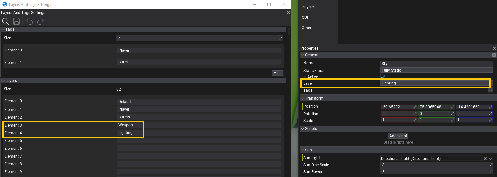
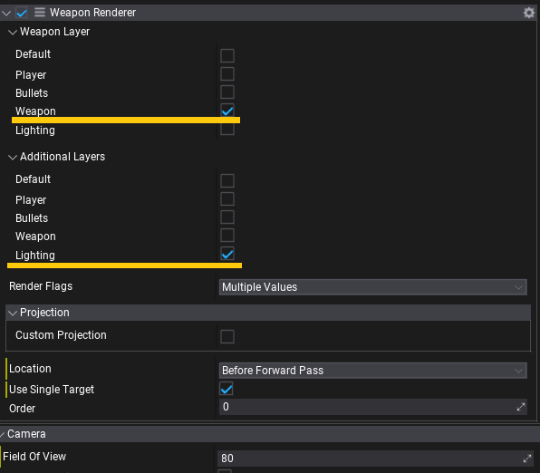

HOWTO: Render FPS weapon
In this tutorial, you will learn how to create a custom PostFx script and use it to render player weapon in a first-person shooter game. It features:
- separate weapon rendering pass
- no clipping with world geometry
- customizable visuals for a weapon (eg. can disable SSAO/SSR)
- customizable render projection (weapon can be rendered with own FOV/Frustum)
- customizable lighting (eg. weapon can be affected only by sunlight).
1. Create script
Create a new script and add code that performs the effect rendering. Use PostProcessEffect class that inherits from Script and can be used as postfx on camera and view.
using FlaxEngine;
/// <summary>
/// PostFx script for custom player weapon rendering over world geometry. Attached to the player camera actor.
/// </summary>
public class WeaponRenderer : PostProcessEffect
{
private Camera _camera;
private SceneRenderTask _renderingTask;
private GPUTexture _outputTexture;
private GPUPipelineState _compositeOutputPipeline;
/// <summary>
/// Layer (or layers) that are used by weapon. Used to hide weapon from default scene rendering in the Game viewport.
/// </summary>
public LayersMask WeaponLayer = new LayersMask(0);
/// <summary>
/// Layer (or layers) that are used by additional objects used by weapon rendering (eg. lights, postfx volumes).
/// </summary>
public LayersMask AdditionalLayers = new LayersMask(0);
/// <summary>
/// Rendering features to use for weapon rendering (limited to main rendering - PostFx are configured in the main view drawing).
/// </summary>
public ViewFlags RenderFlags = ViewFlags.DirectionalLights |
ViewFlags.SkyLights |
ViewFlags.SpotLights |
ViewFlags.PointLights |
ViewFlags.SpecularLight |
ViewFlags.Shadows |
ViewFlags.ContactShadows |
ViewFlags.Fog |
ViewFlags.Reflections |
ViewFlags.GI;
/// <summary>
/// If checked then weapon will be rendered with custom projection (customizable FOV and near/far planes).
/// </summary>
[EditorDisplay("Projection")]
public bool CustomProjection = false;
/// <summary>
/// Custom Field Of View angle for the weapon rendering.
/// </summary>
[Range(30, 120), EditorDisplay("Projection"), VisibleIf(nameof(CustomProjection))]
public float WeaponFov = 60.0f;
/// <summary>
/// Custom Near Plane distance for the weapon rendering.
/// </summary>
[Limit(0.0001f), EditorDisplay("Projection"), VisibleIf(nameof(CustomProjection))]
public float WeaponNearPlane = 0.1f;
/// <summary>
/// Custom Far Plane distance for the weapon rendering.
/// </summary>
[Limit(10.0f), EditorDisplay("Projection"), VisibleIf(nameof(CustomProjection))]
public float WeaponFarPlane = 10000.0f;
public WeaponRenderer()
{
// Render weapons after scene is rendered but before any PostFx
Location = PostProcessEffectLocation.AfterForwardPass;
UseSingleTarget = true;
}
public override void OnEnable()
{
_camera = Actor.As<Camera>();
if (_camera == null)
{
Debug.LogError("Attach WeaponRenderer to the player camera actor.", this);
return;
}
// Disable weapons drawing in camera's view
_camera.RenderLayersMask &= ~WeaponLayer;
// Create new rendering task to draw
_outputTexture = GPUDevice.Instance.CreateTexture("WeaponTexture");
_renderingTask = new SceneRenderTask
{
IsCustomRendering = true, // Don't use automatic rendering but manually schedule rendering
Output = _outputTexture,
};
_renderingTask.Buffers.UseAlpha = true;
// Create PSO that will draw weapon over the scene (rendered weapon is alpha-masked)
var psoDesc = GPUPipelineState.Description.DefaultFullscreenTriangle;
psoDesc.PS = GPUDevice.Instance.QuadShader.GetPS("PS_CopyLinear");
psoDesc.BlendMode = BlendingMode.AlphaBlend;
psoDesc.BlendMode.SrcBlend = BlendingMode.Blend.One;
psoDesc.BlendMode.DestBlend = BlendingMode.Blend.InvSrcAlpha;
psoDesc.BlendMode.BlendOp = BlendingMode.Operation.Add;
psoDesc.BlendMode.SrcBlendAlpha = BlendingMode.Blend.One;
psoDesc.BlendMode.DestBlendAlpha = BlendingMode.Blend.Zero;
psoDesc.BlendMode.BlendOp = BlendingMode.Operation.Add;
_compositeOutputPipeline = new GPUPipelineState();
_compositeOutputPipeline.Init(ref psoDesc);
}
public override void OnDisable()
{
// Cleanup
Destroy(ref _compositeOutputPipeline);
Destroy(ref _outputTexture);
Destroy(ref _renderingTask);
_camera = null;
}
public override void Render(GPUContext context, ref RenderContext renderContext, GPUTexture input, GPUTexture output)
{
if (!_renderingTask)
return;
var camera = _camera ?? Actor.As<Camera>();
if (!camera)
return;
Profiler.BeginEventGPU("Weapon");
var width = input.Width;
var height = input.Height;
// Initialize weapon rendering
var view = renderContext.View;
view.Mode = ViewMode.NoPostFx; // Just render weapon with lighting, postfx are applied once for a whole game view
view.RenderLayersMask = WeaponLayer | AdditionalLayers; // Render both weapon and lighting
view.Flags = RenderFlags; // Select visual features to use during rendering
if (CustomProjection)
{
// Customize projection matrix
view.Near = WeaponNearPlane;
view.Far = WeaponFarPlane;
float aspect = (float)width / (float)height;
float fov = WeaponFov * Mathf.DegreesToRadians;
Matrix.PerspectiveFov(fov, aspect, view.Near, view.Far, out view.Projection);
view.NonJitteredProjection = view.Projection;
view.UpdateCachedData();
}
_renderingTask.View = view;
// Setup rendering resolution
if (!_outputTexture.IsAllocated)
{
var outputDesc = GPUTextureDescription.New2D(width, height, _renderingTask.Buffers.OutputFormat);
_outputTexture.Init(ref outputDesc);
}
_renderingTask.Resize(width, height);
// Reuse main game viewport GI/GlobalSDF/etc when rendering weapon
_renderingTask.Buffers.LinkedCustomBuffers = renderContext.Buffers;
// Render nested scene with weapon-only
Renderer.Render(_renderingTask);
// Composite weapon over the scene view
context.ResetRenderTarget();
context.SetViewport(width, height);
context.SetRenderTarget(input.View());
context.BindSR(0, _outputTexture.View());
var pipeline = _compositeOutputPipeline;
context.SetState(pipeline);
context.DrawFullscreenTriangle();
Profiler.EndEventGPU();
}
}
2. Setup layers
Open Layers and Tags settings and add separate layers for Weapons and Lights. Then set those layers to proper actors so the game knows which object is player's weapon, and which are lights on a scene.

3. Setup scene
Now, add created script to the Camera actor, link WeaponLayer property of the script to the layer with player weapon objects. Link AdditionalLayers property to global PostFx volume, Environment probes and Lights that should be used when rendering weapons.

You can also adjust rendering settings via RenderFlags property or override the projection matrix used for weapon rendering.
4. Test it out!
Finally start the game and see the result.